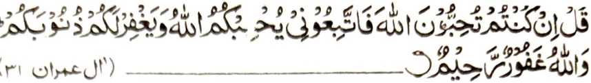
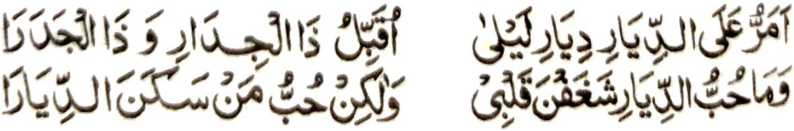
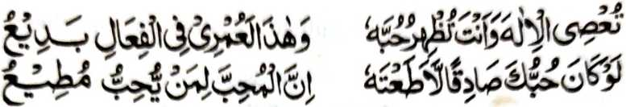
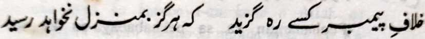
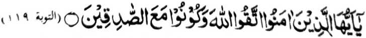
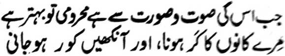
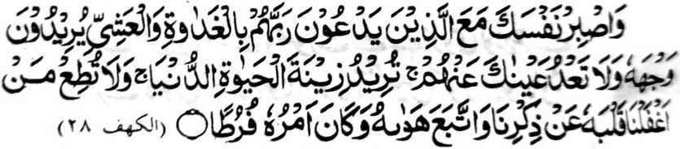
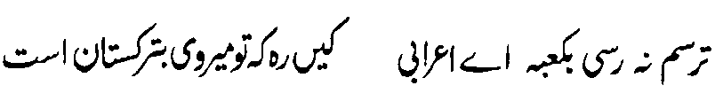
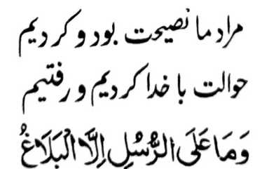

Si-i sangka-iya pinto, a kiyatarotop o ika nem a thanodan, na phaki-inengka aken ko manga Muslim so kaokiti ran ko Sunnah o Nabi (Sallallaho ‘Alaihi Wasallam) ago so kipelomameka-an ko siran a manga barasimba ko gagawi-i daon-dao, sabap sa giya-i kapakapethikena iran ko Islam. Apiya so Nabi (Sallallaho ‘Alaihi Wasallam) na inisogo-on so kapakipelomameka iyan sangkoto a manga tao. Pitharo o Nabi (Sallallaho ‘Alaihi Wasallam) makapantag si-i:
“Ba ko rekano penggonana-on so sowa-sowai a khibegay niyan rekano so mapiya sa donya go sa Akhirat? Paliyogat reka so kapamangeped ka ko manga kalilimod a gi-i thaden-tadem ko Allah. ” [Mishkat]
Imanto na si-i rekano den miyatimo so kambabanoga niyo ago so kakilala-a niyo ko titho a pekhababaya ko Allah go siran na-i so pephangongonotan ko Sunnah, sabap sa so Allah na siyogo Iyan so pekhababaya-an Niyan a Nabi Niyan a ladiyawan ko toro-an o manga Muslim. Pitharo o Allah sa Qur’an:

"Tharoa ngka (Ya Muhammad) a o sekano na khababaya-an niyo so Allah na onoti ako niyo, ka kababaya-an kano o Allah go napiyan Niyan rekano so manga dosa niyo. Ka so Allah na Manapi a Makalimo-on." [Surah Aali-‘Imran:31]
Giyoto-i sabap a saden sa onotan niyan so Nabi (Sallallaho ‘Alaihi Wasallam) phiya-piya na lebi a marani ko Allah, na saden sa di niyan onotan sekaniyan na mawatan sekaniyan ko Allah go di niyan khakowa so limo Iyan. So manga pananapsir ko Qur an na pitharo iran a saden sa tharo-on niyan a pekhababaya-an niyan so Allah ogaid na di niyan pagokitan so Sunnah o Nabi (Sallallaho ‘Alaihi Wasallam) na tanto a bokhag; sabap sa aya sarat o babaya na so iangon a mitotompok ko pekhababaya-an na kababaya-an ka mambo. Aden a pababayok a inaloy niyan so manga katharo o lomiyangkap so ingaran iyan a Qais ‘Amr, a pephamagida-an ko Laila.

"Igira siyagadan ko so Inged o Laila, na pekhababaya-an ko so omani paitao ago pangelcban niyan. Aya mata-an na kena ba ko babaya sangkoto a inged ko kababaloy niyan a inged, ka aya pekhababaya-an aken na so manga tao a mababalingon a mitotompok ko Laila."
Aden pen a isa a pababayok a pitharo iyan:

“Pephanangin ka sa pekhababaya-an ka so Allah, ogaid na di ngka pagonotan so manga Sogo-an Niyan! Opama ka seka na titho a pekhababaya-an ka Sekaniyan na di ngka Sekaniyan den sopaken, sabap sa so tao na lalayon niyan phagonotan so sogo-an non o pekhababaya-an niyan.”
So Nabi (Sallallaho Alaihi Wasallam) na miyatharo iyan, “So langon o Ummat aken na palaya den phakasorga inonta bo so somangka.” Miyatharo o manga Sahabah, “Antawa-ai tao a zangka?” Miyatharo iyan, “Saden sa onotan ako niyan na phakasoled ko Sorga, na saden sa sopaken ako niyan na giyoto den-i kiyasangka iyan. ”
Si-i ko isa a Hadith na miyatharo o Nabi (Sallallaho Alaihi Wasallam), “Daden matarotop so paratiyaya o isa rekano taman sa so baya a ginawa niyan na di niyan mapakaphasiyonot ko nganin a minitalingoma ko, ma-ana so Qur'an. ” [Mishkat]
Panto a maregen a kaphakaparatiyaya o tao a so siran a tatarima-an niran a gi-i managontaman ko (kamapiya-an o) Islam ago so manga Muslim na peropaken niran so Allah go so Nabi. Igira pitharo tano kiran a giyangkanan a sopaka nan o Sunnah na tanto siran a pekhararangitan; na anda tnanaya-i kakhaped iran ko miyamangonot ko Nabi (Sallallaho ‘Alaihi Wasallam)?
So Saadi (Rahmatullahi ‘Alaihi) na miyatharo iyan:

“Saden sa mokit ko lalan a salakao ko Sunnah o Nabi (Sallallaho ‘Alaihi Wasallam) na diden mira-ot ko zongowan niyan.”
Giyoto-i sabap a saden sa makipelomameka ko siran a titho a pekhababaya ko Allah ago titho a pephangongonotan ko Sunnah, ka an siran makanggona ko paratiyaya, na mata-an a pagozor siran ko daradat a kathagompiya.
Makapantag sangka-iya bandingan, na o khaparo na pamimikirana niyo angka-iya a manga katharo o Nabi Sallallaho ‘Alaihi Wasallam):
"Igira somiyagad kano ko manga Sapadan ko Sorga, na awt kano ron na kowa kano ko manga onga-on.” So manga Sahabah na mini-iza iran, “Antona angkanan a manga sapadan ko Sorga? So Nabi (Sallallaho ‘Alaihi Wasallam) na minisembag iyan, “Giyoto so manga kalilimod a gi-i ran ipamangenda-o so ‘Ilmo ko Islam ago so Qur'an."
So Nabi (Sallallaho ‘Alaihi Wasallam) na miyatharo iyan pen, “So Luqman na minipando-an iyan ko wata, iyan a bagowa mama anyka iya a manga katharo: 'Pakipelomameka ka ko manga Olama, go pamakineya ngka phiya-pi ya so manga katharo o manga oongangen, ko ipezabap ro-o o Allah a kaphagoyaga Niyan ko ma-atay a manga poso, sa lagid o kaphagoyaga Niyan ko ma-atay a lopa misabap ko mabager a oran; ka so bo so manga oongangen-i pezabot ko Agama."
So manga Sahabah na iniza-an niran so Nabi (Sallallaho ‘Alaihi Wasallam), “Antawa-ai miyakapiya-piya a bolayoka ami? Minisembag iyan, “Giyoto so tao a igira miya-ilay ngka sekaniyan na kiyatademan ka so Allah, igira piyamakineg ka so katharo iyan, na pekhaomanan so sabot ka ko Islam, go igira miya-ilay ngka so manga galebek iyan na kiyatademan ka so Akhirat. ’ [Targhib]
Aden pen, “Aya pithamanan a mananagontaman a oripen o Allah na so sekaniyan a igira miya-ilay ngka na kiyatademan ka so Allah.” Pitharo o Allah sa Qur’an

“Hay so Miyamaratiyaya! Kaleken niyo so Allah go ta pi kano ko Mimamata-an.’ [Surah At-Taubah:119]
So manga pananapsir na pitharo iran a so “Mimamata-an” na aya ma-ana niyan na so manga Auliya ago so siran a titho a pekhababaya ko Allah, sa saden sa makipelomameka kiran ago mamakineg ko manga osiyat iran na pephagomareg so daradat o paratiyaya niyan.
So Shaikh Akbar na pitharo iyan, “Di ngka khapalagoyan so manga rarata a pamikiran o ginawa ngka, apiya-i kapanamari ngka on ko tenday o kapephaginetao ngka taman sa di ngka mapakaphasiyonot so manga baya a ginawa ngka ko manga Sogo-an o Allah go so Sunnah o Nabi (Sallallaho Alaihi Wasallam). Sa anda den-i kato-ona ngka ko sakatao a pekhababaya ko Allah, na phasiyonot ka on phiya-piya go okiti ngka so manga pando-an niyan sa lagid o ba da den a kabaya a ka a salakao ron a maito bo; go paratiyaya-a ngka so pando-an niyan ko langon o awid ka a akal melagid o pantag ko niyawa [ma-ana simba], o di [na pantag] si-i ko [manga rokon o] Agama, apiya so pantag ko kapaginetao, ka kalo-kalo na manggonana-o ka iran ko lalan a ontol ago mapakarani ka iran ko Allah.”
Pitharo o Nabi (Sallallaho 'Alaihi Wasallam), uIgira so isa ka sagorompong na tiyademan niran so Allah sangkoto a kalilimod,. na so manga Mala-ikat na libeten niran angkoto a kalilimod, na tomoron so limo o Allah, go alowin siran o Allah ko kalilimod o manga Malaikat.” Antona-a pen a bantogan a khaparoli o Miyamaratiyaya a makalawan sangkoto a ka-aloya kiran o Allah ago masoso-at kiran? Pitharo o Nabi (Sallallaho Alaihi Wasallam), "Aden a Mala-ikat a sogo-on ko siran a gi-i thaden-tadem ko Allah sa Ikhlas, na tharo-on niyan, 'So Allah na rinila-an Niyan so miyaona a manga dosa niyo, go siyambi-an Niyan so manga rarata a Amaal iyo sa manga pipiya. ”
Si-i ko isa a Hadith, na so Nabi (Sallallaho ' Alaihi Wasallam) na pitharo iyan, “Saden sa kalilimod o manga Muslim, a di ran katademan so Allah ago di ran kasalawatan so Nabi (Sallallaho ‘Alaihi Wasallam), na mipemboko iran noto ko Gawi-i a Kaphangokom. ”
Aden a pangeni o Hazrat Dawod ('Alaahis Salaam) a kati-i so kinilapiyat iyan: “Ya Allah! o khailay ako Ngka a di aken siyapen so kalilimod o siran a pethademan Ka iran, ka si-i ako somong ko kalilimod o manga baradosa, na potola Ngka so manga a-i aken (ka an ako kiran di phakasong)”

Aden a pababayok a miyatharo iyan, "O di aken Sekaniyan [Allah] pamakinega ago di aken mailay so Paras Iyan, na taralebi a ba ko den miyabengel ago miyabota.”
So Hazrat Abu Hurairah (Radhiallaho Anho) na pitharo iyan, “So kalilimod a gi-i ron thaden-tademan so Allah ago gi-i ron phodi-podin, na pezindao ko manga ka-aden ko langit sa lagid o kapezindao o manga bito-on ko manga ka-aden sa lopa.”
Miyaka-isa na so Hazrat Abu Hurairah (Radhiallaho ‘Anho) na somiyong so padi-an na piyakalangkap iyan ko madakel a tao, “Hay manga pagari ko! Ba kano si-i den oontod a so minithanan o Nabi (Sallallaho ‘Alaihi Wasallam) na gi-i mbagi-bagi-in sa Masjid.” Mizasakoya so manga tao sa Masjid na da a miya-ilay ran a manga nganin a gi-i mbagi-bagi-in sa komiyasoy siran a tanto a miyarata a ginawa iran. Iniza-an siran o Abu Hurairah (Radhiallaho ‘Anho), “Antona-a bes-i pezowa-an ro-o?” Minisembag iran, “Aden a manga tao a pembatiya siran sa Qur’an, go aden pen a manga ped a gi-i ran thaden-tadem ko Allah.” Miyatharo iyan, “Giya-i bebethowan nami sa minithanan o Nabi (Sallallaho ‘Alaihi Wasallam).”
So Imam Ghazali (Rahmatullahi ‘Alaihi) na miya-aloy niyan a lagid anan a manga Hadith Apiya so Nabi (Sallallaho ‘Alaihi Wasallam) na inisogo-on o Allah:

"Na ge-enangka a ginawa ngka rakhes o siran a pezimba-an niran so Kadenan niran ko kapipita ago so kagabi-gabi, a kabaya iran so kasoso-at Iyan; go di siran pelepasa o dowa mata ngka, sa kabaya-a ka sa parayasan ko kaoya-goyag ko donya; go di ngka pagonoti so tao a piyakilipatan Nami ko poso iyan so tadem Rekami, go inonotan niyan so kabaya iyan a ribat, go mimbaloy so betad iyan a miyakalepas." [Surah Al-Kahf:28]
Madakel a manga Hadith a mitotoro iran a so Nabi (Sallallaho ‘Alaihi Wasallam) na lalayon niyan pephanalamatan so Allah sabap ko kiya-adena Niyan ko lagidoto a manga tao a ped ko manga Ummat iyan a taros a inisogo rekaniyan a kapakipelomameka iyan kiran. Si-i pen sangkanan a Ayaat, na so Nabi (Sallallaho Alaihi Wasallam) a inisaparon so kaphagonot iyan ko siran a oripen o napso iran a pilelepas iran so manga takes o Allah. Lalayon rekaniyan ipaphaliyogat a di niyan kapagonoti ko manga kabaya iran a ribat.
Imanto na so siran a phagonotan niran so manga dadabi-atan o siran a manga miyongkir ago manga baradosa a manga tao ko inged o manga kafir na ilaya iran ko manga poso iran o anda taman-i kawatan niran ko titho a miyamaratiyaya. So kaphagiringi ran ko manga kafir ago so manga Nasrani na miya-awat iyan siran ko Lalan a Ontol

“Hay sakatao a da a meleng iyan a Badawe! Ipekhawan aken o ba ka baden di mira-ot sa Ka’abah; sabap sa so lalan a pekhedegen ka na si-i maka-aantap sa Turkistan ’’

Aya antap aken na so kamosawiri rekano pantag ko Agama, na mininggolalan aken so galebek aken. Imanto na inisarig aken sekano den ko Allah, go magodas ako rekano. Apiya so manga Nabi na inisogo kiran so kipanolonen niran ko Benar.